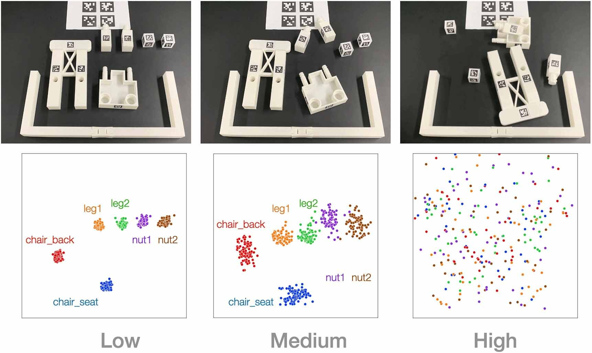

Furniture Assembly
Long-horizon complex manipulation tasks
Reproducible
Standardized environment setup
Long-horizon complex manipulation tasks
Standardized environment setup
Python-based robot control stack / Simulator
200+ hours of 5000+ teleoperation trajectories
Reinforcement learning (RL), imitation learning (IL), and task and motion planning (TAMP) have demonstrated impressive performance across various robotic manipulation tasks. However, these approaches have been limited to learning simple behaviors in current real-world manipulation benchmarks, such as pushing or pick-and-place. To enable more complex, long-horizon behaviors of an autonomous robot, we propose to focus on real-world furniture assembly, a complex, long-horizon robot manipulation task that requires addressing many current robotic manipulation challenges to solve.
FurnitureBench is a reproducible real-world furniture assembly benchmark aimed at providing a low barrier for entry and being easily reproducible, so that researchers across the world can reliably test their algorithms and compare them against prior work.
Our system runs with vision-based control for assembly tasks. The robot takes as an observation the images from front and wrist cameras and proprioceptive robot state, and operates with delta end-effector pose and gripper action commands at 10Hz. Then, Operational Space Control (OSC) converts an action into joint torques.
FurnitureBench provides a suite of 8 tasks, each of which introduces its own interactions and challenges. The furniture models are designed inspired by IKEA furniture and modified to enable a single robotic arm to carry out the assembly.
To make the real-robot environment easy to reproduce, we opt for widely used products across the world (e.g., Franka Panda, Intel RealSense cameras, IKEA table) and 3D-printing objects. 10 participants could successfully reproduce the environment from scratch with the performance gaps smaller than 16%.
Our benchmark has three different levels of randomness in the initial states: low, medium, and high. The higher the randomness in the initial state is, the more generalization capability is required for an agent. We provide a task initialization GUI tool to evaluate algorithms under those initial state distribution.
|

|
|
We provide a Python-based plug-and-play software stack, including scripts for environment setup, data collection, training, evaluation, and more. FurnitureBench's Python APIs are shared across real-world and simulated environments.
|
|
(2x speed) |
FurnitureSim is a fast and realistic simulator of FurnitureBench, based on IsaacGym and Factory. FurnitureSim is designed to be a seamless substitution of the real-world environment, which enables rapid prototyping of new algorithms.
|
(5.2x speed) |
(4x speed) |
(6x speed) |
The complexity and long task horizon of FurnitureBench tasks make tabula rasa RL with real-world interactions challenging. To make our benchmark tractable, we provide 219.6 hours of 5100 teleoperation demonstrations. The table below summarizes the dataset statistics.
| Furniture | Initial randomness | # demos | Avg. length | Total hrs |
|---|---|---|---|---|
| lamp | low | 150 | 594 | 4.9 |
| lamp | medium | 150 | 598 | 5.0 |
| lamp | high | 50 | 768 | 2.1 |
| square_table | low | 150 | 1689 | 14.1 |
| square_table | medium | 150 | 1660 | 13.8 |
| square_table | high | 50 | 1682 | 4.7 |
| desk | low | 100 | 1531 | 8.5 |
| desk | medium | 100 | 1914 | 10.6 |
| desk | high | 50 | 1687 | 4.7 |
| drawer | low | 250 | 571 | 7.9 |
| drawer | medium | 250 | 520 | 7.2 |
| drawer | high | 50 | 781 | 2.2 |
| cabinet | low | 150 | 883 | 7.4 |
| cabinet | medium | 150 | 814 | 6.8 |
| cabinet | high | 50 | 1166 | 3.2 |
| round_table | low | 100 | 847 | 4.7 |
| round_table | medium | 100 | 867 | 4.8 |
| round_table | high | 50 | 1060 | 2.9 |
| stool | low | 100 | 1231 | 6.8 |
| stool | medium | 100 | 1419 | 7.9 |
| stool | high | 50 | 1273 | 3.5 |
| chair | low | 100 | 1817 | 10.1 |
| chair | medium | 100 | 2282 | 12.7 |
| chair | high | 50 | 2066 | 5.7 |
| one_leg | low | 1000 | 374 | 20.8 |
| one_leg | medium | 1000 | 429 | 23.8 |
| one_leg | high | 500 | 461 | 12.8 |
| Office | Age | Start date | Salary |
Our experiments consist of two benchmarks:
We evaluate our benchmark with imitation learning (BC) and the state-of-the-art offline RL (IQL).
We benchmark first five skills of each furniture task. The results in the table below demonstrate that individual skill policies can successfully learn grasping and placing skills; but, mostly fail at inserting, which requires precise alignment.
We present both quantitative and qualitative results on full furniture assembly tasks below. The completed phases represent the number of successful subtasks (e.g., grasping, placing, inserting) of full-assembly tasks. Overall, neither BC nor IQL achieves a single part assembly except for one-leg.
Videos play in 2x speed.
|
|
|
|
|
|
|
|
|
|
|
|
|
|
|
|
|
|
|
|
|
|
|
|
|
|
|
|
|
|
|
|
|
|
|
|
@inproceedings{heo2023furniturebench,
title={FurnitureBench: Reproducible Real-World Benchmark for Long-Horizon Complex Manipulation},
author={Minho Heo and Youngwoon Lee and Doohyun Lee and Joseph J. Lim},
booktitle={Robotics: Science and Systems},
year={2023}
}